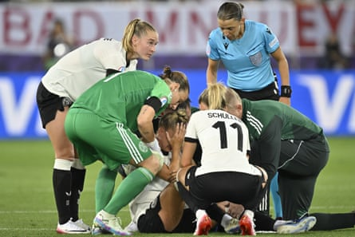

As Jule Brand collected the ball on the turn on the corner of the box with her back to goal, she knew the assignment. Germany needed something special to break through Poland’s stubborn resistance. Within a blink of an eye, the net was bulging and Germany were making a winning start to their campaign.
A well-coached Poland side can be proud of their performance but, once Brand’s stunning strike went in in the 52nd minute, the result looked inevitable and Lea Schüller headed in Germany’s second to give them a perfect springboard to the tournament.
The record eight-time European champions have failed to reach the final only twice since the first time they qualified in 1989, but it was not until the second half when they were able to demonstrate why so many pundits are tipping them to go deep into the competition yet again.
They were by no means perfect, but a pleased player-of-the-match Brand said: “We do have room for improvement, especially with our final pass, but the first game of a Euros is really difficult. That’s why it’s great we got the three points.”
With St Gallen lying less than 15 miles from the German border, this was almost a home fixture for the 2022 runners-up and their supporters brought energy and passion to the streets of the seventh-century city, surrounded by rolling green hills on another picture-perfect, warm evening in Switzerland. After the hosts, German citizens have bought more tickets for this tournament than any other nation, and it showed, as they paraded in vast numbers through the streets towards the stadium before kick-off, eager to see if their team could continue their formidable run of five straight victories in which they had scored 24 times.
Germany captain Giulia Gwinn looked devastated as she was forced to come off in the first half with an injury.Photograph: Gian Ehrenzeller/EPA
The determined and hard-working debutants Poland, however, had nothing to lose and executed their gameplan impressively in the first half. Without the ball, they often appeared to be playing with a back six, but they proved tricky for the Germans to break down and then, in the transitional moments, they had the pace of the Barcelona striker Ewa Pajor in attack to worry the Germany back four. Emilia Szymczak volleyed wide of the far post when unmarked at a deep free-kick, before Ann-Katrin Berger tipped a Pajor shot over the crossbar, although the offside flag was raised.
Such was Christian Wück’s frustration, he sent his team out for the second half more than three minutes early. Brand responded with the moment of individual quality that was needed, cutting in on to her left foot and driving her strike past Kinga Szemik. The sea of white shirts behind the goal erupted.
Sjoeke Nüsken inexplicably headed wide when a goal seemed certain, before Schüller’s far-post header made the win safe. Poland did not give up and Pajor was thwarted by a fine reaction save from Berger and while Germany did not quite send out the same statement that Spain stamped across the competition on Thursday, they are in form.
The only dark cloud came in the in the first half when their right-back and captain Giulia Gwinn was forced off with a worrying injury. She looked devastated, fighting back tears as she limped off the field.
Wück confirmed that Gwinn will have an MRI scan on Saturday morning in Zurich, while Brand said: “When Giulia lies on the pitch, that is never good, because usually she gets up straight away. I think you noticed a bit of a downer. But we got the three points for her.”